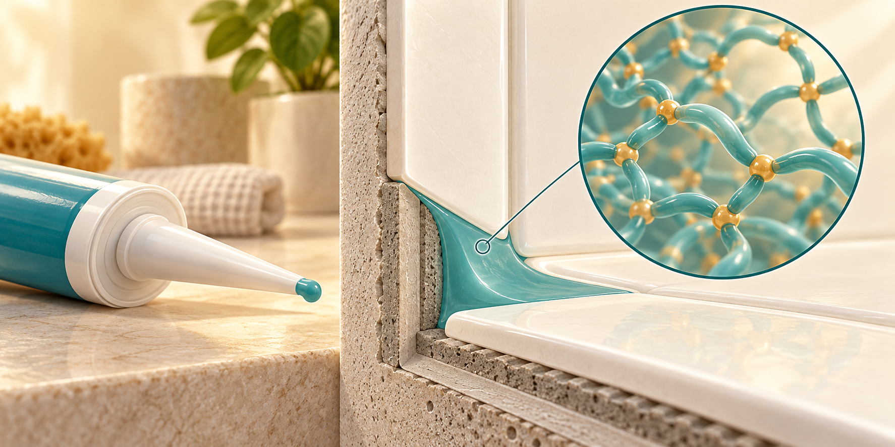
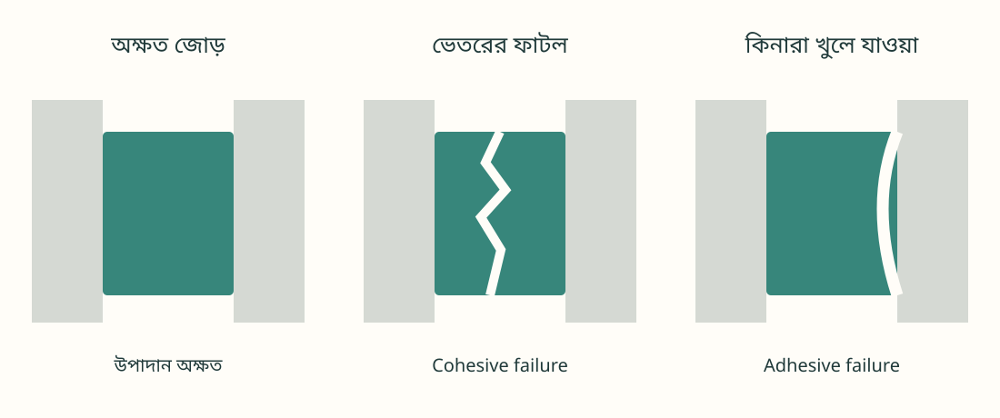

সিল্যান্ট কী দিয়ে তৈরি? শক্ত হওয়া ও ক্ষয়ের বিজ্ঞান
নরম পেস্ট বাতাসের আর্দ্রতায় রাবার হয় কেন? আর জল আটকানো সেই রাবার একদিন ফেটে যায় কীভাবে? কাঁচামাল, রাসায়নিক গঠন ও ক্ষয়ের প্রক্রিয়া থেকে উত্তর খোঁজা যাক।

01প্রধান কাঁচামাল ও রাসায়নিক গঠন
বাথরুম, জানালা বা দেয়ালের ফাঁক বন্ধ করার কল্কিং বা সিল্যান্ট কোনো একক পদার্থ নয়। এর প্রধান বন্ধনকারী উপাদান পলিমার—দীর্ঘ আণবিক শিকল। এর সঙ্গে খনিজ গুঁড়া, শক্ত হওয়ার উপকরণ ও অন্যান্য সংযোজক মেশানো হয়। শক্ত হওয়ার পরও নমনীয় থাকায় এটি জোড়ের নড়াচড়ার সঙ্গে মানিয়ে জল ও বাতাসের পথ বন্ধ করে। [1]
তাই পুরো পণ্যের একটি মাত্র রাসায়নিক সূত্র নেই। নিচে প্রতিনিধিত্বমূলক পুনরাবৃত্ত একক, বন্ধন বা প্রান্তীয় গোষ্ঠী দেখানো হলো; বাস্তব গঠন পণ্যভেদে বদলে যায়।
| ধরন | গঠনের উদাহরণ | বৈশিষ্ট্য |
|---|---|---|
| সিলিকন (silicone) | পলিডাইমিথাইলসিলোক্সেন, PDMS [−Si(CH₃)₂−O−]ₙ | জল ও আবহাওয়া সহনশীল; সাধারণত এর ওপর রং করা কঠিন। |
| মডিফায়েড সিলিকন | পলিইথারের মতো জৈব পলিমারের প্রান্তে −Si(OR)ₓ | মূল শিকল সাধারণ সিলিকনের মতো নয়। অনেক পণ্যে রং করা যায়, তবে সামঞ্জস্য যাচাই দরকার। |
| পলিইউরেথেন | ইউরেথেন বন্ধন −NH−C(=O)−O− | নমনীয় ও আঠালো; কিছু পণ্যে বাইরে ব্যবহারের জন্য রঙের সুরক্ষা দরকার। |
| অ্যাক্রিলিক | যেমন পলিবিউটাইল অ্যাক্রিলেট [−CH₂−CH(COOC₄H₉)−]ₙ | অনেক পণ্য জলভিত্তিক। ঘরের ছোট ফাঁকে কাজে লাগে; সব পণ্য স্থায়ীভাবে জলে ডুবিয়ে রাখার উপযোগী নয়। |
| বিউটাইল রাবার | আইসোবিউটিলিন-প্রধান কোপলিমার প্রধান একক [−CH₂−C(CH₃)₂−]ₙ | বাতাস ও জলীয় বাষ্প আটকাতে ব্যবহৃত হয়; না-শক্ত-হওয়া পণ্যও আছে। |
n হলো পুনরাবৃত্তির সংখ্যা; R একটি জৈব গোষ্ঠী। Silicone পলিমার, মৌলিক silicon (Si) এবং সিলিকা (SiO₂) এক পদার্থ নয়।
পলিমারের সঙ্গে আর কী মেশে?
ক্যালসিয়াম কার্বনেট (CaCO₃) ঘনত্ব, কঠোরতা ও খরচ নিয়ন্ত্রণে সাহায্য করে। সিলিকা (SiO₂) শক্তি বাড়ায় এবং পেস্ট গড়িয়ে পড়া কমায়। টাইটানিয়াম ডাইঅক্সাইড (TiO₂) সাদা রঞ্জক হতে পারে। সঙ্গে থাকে ক্রস-লিংকার, অনুঘটক, আঠালোভাব বাড়ানোর উপকরণ এবং প্রয়োজনমতো প্লাস্টিসাইজার, স্থিতিকারক বা ছত্রাকরোধী উপাদান। সব পণ্যে সব উপাদান থাকে না।
ক্রস-লিংকারের উদাহরণ মিথাইলট্রাইমেথক্সিসিলেন CH₃Si(OCH₃)₃; অ্যাসিটিক অ্যাসিড ছাড়ে এমন ব্যবস্থায় মিথাইলট্রাইঅ্যাসিটক্সিসিলেন CH₃Si[OC(=O)CH₃]₃। অনুঘটক টিন বা টাইটানিয়ামভিত্তিক হতে পারে; প্রকৃত উপাদান প্রস্তুতপ্রণালির ওপর নির্ভর করে।
02কঠিন কোয়ার্টজ থেকে নরম পেস্ট কীভাবে?
সিলিকন সিল্যান্ট তৈরিতে প্রথমে পলিমার সংশ্লেষ, পরে ব্যবহারযোগ্য পেস্ট তৈরির জন্য মিশ্রণ প্রস্তুত করা হয়। কেবল বালির গুঁড়া মেশালেই সিলিকন তৈরি হয় না। [3][4]
শিল্পে কোয়ার্টজজাত SiO₂-কে উচ্চ তাপমাত্রায় কার্বন দিয়ে বিজারিত করে সিলিকন ধাতু পাওয়া যায়। এটি প্রক্রিয়ার সামগ্রিক সমীকরণ। এরপর সিলিকন ও মিথাইল ক্লোরাইড (CH₃Cl) থেকে মিথাইলক্লোরোসিলেন তৈরি হয়। পৃথকীকরণ, বিশুদ্ধকরণ, হাইড্রোলাইসিস, ঘনীভবন ও পলিমার তৈরির ধাপ পেরিয়ে শিকলের দৈর্ঘ্য ও প্রান্তীয় গোষ্ঠী নিয়ন্ত্রণ করা হয়। মিথাইল গোষ্ঠীর উৎসের মধ্যে মিথানলও আছে।
- কাঁচামাল প্রস্তুত: পলিমার ও খনিজ গুঁড়ার মান এবং আর্দ্রতা নিয়ন্ত্রণ।
- মিশ্রণ: ফিলার ও রঞ্জক সমভাবে ছড়িয়ে সান্দ্রতা ও শক্তি ঠিক করা।
- বিক্রিয়ার উপকরণ যোগ: আর্দ্রতায় শক্ত হওয়া পণ্যে বাইরের জলীয় বাষ্প ঢোকা ঠেকিয়ে ক্রস-লিংকার ও অনুঘটক মেশানো। যোগ করার ক্রম পণ্যভেদে বদলায়।
- বায়ুবুদবুদ অপসারণ ও প্যাকিং: ভ্যাকুয়াম মিশ্রণসহ উপযুক্ত পদ্ধতি, মান পরীক্ষা এবং আর্দ্রতারোধী কার্ট্রিজে ভরা।
শুধু ভ্যাকুয়াম করলেই যথেষ্ট শুকিয়ে যাবে এমন নয়; কাঁচামাল শুকানো ও যন্ত্রপাতির আর্দ্রতা নিয়ন্ত্রণও জরুরি। দুই-উপাদান পণ্যে মূল মিশ্রণ ও হার্ডেনার আলাদা থাকে।
03বাতাসের আর্দ্রতায় রাবার হয় কেন?
অনেক এক-উপাদান সিলিকন সিল্যান্ট বাতাসের জলীয় বাষ্পের সঙ্গে বিক্রিয়া করে। পলিমারের শিকলগুলো রাসায়নিক সংযোগে জুড়ে ত্রিমাত্রিক জাল তৈরি করে—এটাই ক্রস-লিংকিং। নমনীয় শিকল নড়তে পারে, কিন্তু সংযোগগুলো পুরো পদার্থকে তরলের মতো বয়ে যেতে বাধা দেয়। [2]
অ্যালকোহল নির্গমনকারী ব্যবস্থার সরল সমীকরণ
≡Si−OH + HO−Si≡ → ≡Si−O−Si≡ + H₂O
প্রথমটি হাইড্রোলাইসিস, দ্বিতীয়টি সিলানল গোষ্ঠীর ঘনীভবন। R যদি CH₃ হয়, নির্গত অ্যালকোহল মিথানল (CH₃OH)। এখানে শুধু বিক্রিয়াস্থল দেখানো হয়েছে; ≡ চিহ্ন বাকি বন্ধনগুলো সংক্ষেপে বোঝায়। বাস্তবে আরও বিক্রিয়াপথ থাকতে পারে।
অ্যাসিটক্সি ধরনের ক্ষেত্রে Si−O−C(=O)−CH₃ গোষ্ঠী জলের সঙ্গে বিক্রিয়া করে অ্যাসিটিক অ্যাসিড (CH₃COOH) ছাড়ে—তাই ভিনেগারের মতো গন্ধ হয়। অন্য ধরনের সিল্যান্টে অ্যালকোহল বা অক্সাইম বের হতে পারে। সব সিলিকন থেকে অ্যাসিটিক অ্যাসিড বের হয় না।
এক-উপাদান আর্দ্রতা-নির্ভর পণ্যে শক্ত হওয়া সাধারণত বাইরে থেকে ভেতরে এগোয়। ওপরের ত্বক শুকনো মনে হলেও ভেতর প্রস্তুত নাও হতে পারে। সময় নির্ভর করে পুরুত্ব, তাপমাত্রা ও আর্দ্রতার ওপর; পণ্যের নির্দেশ মানতে হবে।
মডিফায়েড সিলিকনেও প্রান্তীয় সিলিল গোষ্ঠী আর্দ্রতায় বিক্রিয়া করে, তবে মূল শিকল জৈব পলিমার। [5] পলিইউরেথেনে আর্দ্রতায় শক্ত হওয়া এক-উপাদান এবং পলিওল-আইসোসায়ানেট মেশানো দুই-উপাদান ব্যবস্থা আছে। পরেরটির মৌলিক বিক্রিয়া: R−N=C=O + R′−OH → R−NH−C(=O)−O−R′। জলভিত্তিক অ্যাক্রিলিক পণ্যে মূলত জল বাষ্পীভূত হয় ও পলিমার কণা একত্রে ফিল্ম গড়ে।
04সময়ের সঙ্গে ফাটে বা খুলে যায় কেন?
রোদ, তাপ, জল ও ভবনের নড়াচড়া একসঙ্গে কাজ করে। পলিমারের রাসায়নিক পরিবর্তন, ভেতরের ফাটল এবং পৃষ্ঠ থেকে খুলে যাওয়া আলাদা ঘটনা—তবে তারা একে অন্যকে বাড়িয়ে দিতে পারে। NIST এই যৌথ প্রভাব নিয়ে আয়ুষ্কাল গবেষণা করে। [6][7]
১. আলো ও অক্সিজেন শিকল বদলে দেয়
আলো শোষণকারী গোষ্ঠী বা অমিশ্রণ থেকে র্যাডিক্যাল তৈরি হয়ে অক্সিডেশন শুরু হতে পারে। শিকল ছিঁড়লে শক্তি ও স্থিতিস্থাপকতা কমে; অতিরিক্ত ক্রস-লিংক তৈরি হলে পদার্থ শক্ত ও কম প্রসারণশীল হতে পারে। কোনটি বেশি ঘটবে তা পলিমার ও মিশ্রণের ওপর নির্ভর করে। তাপ অনেক বিক্রিয়া দ্রুত করে। সিলিকনের Si−O মূল শিকল আবহাওয়া সহনশীল, কিন্তু সংযোজক ও আঠালো সংযোগ চিরস্থায়ী নয়।
২. জল ও উপাদানের স্থানান্তর
জল হাইড্রোলাইসিস-সংবেদনশীল বন্ধন ও সংযোগস্থলকে প্রভাবিত করতে পারে। যেমন পলিয়েস্টার অংশযুক্ত কিছু পলিইউরেথেনে এস্টার বন্ধন ভাঙতে পারে। সব পলিমারে একই হারে এমন হয় না। প্লাস্টিসাইজার সরে যাওয়া বা বেরিয়ে যাওয়াও সংকোচন, কঠোরতা বা আঠালোভাবের পরিবর্তন ঘটাতে পারে। শুধু রং বদলালেই জল আটকানোর ক্ষমতা শেষ হয়েছে বলা যায় না। [9]
৩. বারবার টান ও চাপ
তাপমাত্রা বদলালে দেয়ালের জোড় খুলে ও বন্ধ হয়। অনুমোদিত সীমার বেশি প্রসারণ বা বারবার চাপ সিল্যান্টের ভেতরে ফাটল বাড়ায়—এটি cohesive failure। ভুল গভীরতা বা পাশের দুই পৃষ্ঠের সঙ্গে নিচেও লেগে থাকা, অর্থাৎ তিন দিকে বন্ধন, স্বাভাবিক বিকৃতি বাধাগ্রস্ত করে চাপ কেন্দ্রীভূত করতে পারে।
৪. সংযোগস্থল থেকে খুলে যাওয়া
ধুলো, তেল, ভেজা পৃষ্ঠ, অনুপযুক্ত ভিত্তি বা প্রয়োজনীয় প্রাইমার বাদ দেওয়ায় কিনারা খুলে যেতে পারে—এটি adhesive failure। তখন ভেতরের রাবার অক্ষতও থাকতে পারে। নতুন সিল্যান্ট দ্রুত খুলে গেলে সবসময় সেটি দীর্ঘমেয়াদি রাসায়নিক ক্ষয় নয়। [6]

বাথরুমের কালো দাগ পৃষ্ঠের ময়লা ও আর্দ্রতায় বেড়ে ওঠা ছত্রাকও হতে পারে। কালো দাগ মানেই পলিমার শিকল ভেঙেছে নয়। তবে ফাঁক, ফাটল, খুলে যাওয়া বা জল চুঁইয়ে পড়া থাকলে শুধু পরিষ্কার করায় সমস্যার সমাধান হয় না।
05ঘরে বানানো সম্ভব? কোথায় কী ব্যবহার করবেন?
কাঁচামাল থেকে নির্ভরযোগ্য জলরোধী সিল্যান্ট বানানো ঘরোয়া কাজ নয়।শিকলের দৈর্ঘ্য, গুঁড়ার বিস্তার, জল ও অনুঘটকের সামান্য পার্থক্যেও ফল বদলে যায়। সিলিকন ধাতু তৈরিতে উচ্চ তাপ দরকার; ক্লোরোসিলেন জলের সঙ্গে তীব্র বিক্রিয়ায় হাইড্রোজেন ক্লোরাইড তৈরি করতে পারে। প্রস্তুত পণ্য দিয়ে মেরামত করা আর শিল্পে পলিমার বানানো ভিন্ন বিষয়।
সিলিকনের সঙ্গে স্টার্চ মিশিয়ে ছাঁচ বানানোর কারুশিল্প পদ্ধতি আছে। কিন্তু তাতে ভবনের জলরোধ, সংযোগের শক্তি বা দীর্ঘস্থায়িত্ব নিশ্চিত হয় না। ছাদ চোঁয়ানো বা বাথরুমের জলরোধের জন্য নির্দিষ্ট কাজে অনুমোদিত প্রস্তুত পণ্য বেছে নেওয়াই বাস্তবসম্মত।
| ব্যবহার | কী দেখবেন |
|---|---|
| বাথরুম | ভেজা স্থানের উপযোগিতা, ছত্রাক প্রতিরোধ ও ভিত্তির সঙ্গে সংযোগ। স্থায়ী জলমগ্ন ব্যবহারের অনুমতি আলাদা করে দেখুন। |
| রং করা বাইরের দেয়াল | মডিফায়েড সিলিকন বা পলিইউরেথেনের নির্দিষ্ট ব্যবহার ও রঙের সামঞ্জস্য। রং করা গেলেও রঙের স্তর সমানভাবে প্রসারিত নাও হতে পারে। |
| ঘরের ছোট ফাঁক | অ্যাক্রিলিকজাত পণ্যের সংকোচন, রং ও জল সহ্য করার শর্ত; বেশি নড়াচড়ার জোড়ে আলাদা যাচাই। |
| অ্যাকোয়ারিয়াম বা খাবারের সংস্পর্শ | সেই কাজের জন্য স্পষ্ট অনুমোদিত বিশেষ পণ্য। সাধারণ ছত্রাকরোধী বাথরুম সিল্যান্ট ব্যবহার করবেন না। |
স্থায়িত্ব বাড়াতে পুরোনো নষ্ট অংশ যথাযথভাবে সরান, ভিত্তি পরিষ্কার ও শুকনো করুন, দরকার হলে প্রাইমার দিন। ব্যাকার রড বা বন্ড-ব্রেকার দিয়ে ঠিক আকারের জোড় এবং দুই পাশের সংযোগ বজায় রাখুন। পণ্যের নির্দেশ ও সেফটি ডেটা শিট মেনে বাতাস চলাচল নিশ্চিত করুন এবং শক্ত হওয়ার আগে স্পর্শ এড়ান। [8]
সব সিল্যান্টের আয়ু কি একই?
না। উপাদান, রোদ, জল, জোড়ের নড়াচড়া ও কাজের মানে আয়ু বদলে যায়। একটিমাত্র বছরসংখ্যার বদলে পণ্যের পরিদর্শনসূচি এবং ফাটল, খুলে যাওয়া বা লিকের অবস্থা দেখুন।
পুরোনোর ওপর নতুন দিলেই হবে?
কেবল ওপর ঢেকে দিলে নিচের আলগা সংযোগ বা ভেতরের ফাটল ঠিক হয় না। পুরোনো উপাদানের সঙ্গে সামঞ্জস্য ও ভিত্তির অবস্থা বুঝে পদ্ধতি বাছতে হবে। বাইরের দেয়াল বা জল চোঁয়ানোর সমস্যায় বিশেষজ্ঞের মূল্যায়ন কাজে লাগে।
06উপসংহার: ফাঁক রক্ষা করে অণুর জাল
সিল্যান্ট হলো নমনীয় পলিমার, খনিজ গুঁড়া ও বিক্রিয়ার উপকরণের যৌগিক মিশ্রণ। সিলিকনে Si−O শিকলের ক্রস-লিংকিং রাবারের জাল গড়ে; অন্য ধরনে মূল শিকল ও শক্ত হওয়ার পদ্ধতি আলাদা।
ক্ষয়ের কারণ শুধু শিকল ভাঙা নয়—উপাদানের স্থানান্তর, বারবার বিকৃতি ও সংযোগ খুলে যাওয়াও গুরুত্বপূর্ণ। সঠিক পণ্য, জোড়ের নকশা ও পৃষ্ঠ প্রস্তুতি একসঙ্গে থাকলেই সিল্যান্ট নড়াচড়ার সঙ্গে মানিয়ে জল আটকাতে পারে।
উৎস ও আরও পড়ুন
নির্মাতা, শিল্পসংগঠন ও গবেষণা প্রতিষ্ঠানের তথ্যের ভিত্তিতে সাধারণ প্রক্রিয়া ব্যাখ্যা করা হয়েছে। নির্দিষ্ট পণ্যের নির্দেশই ব্যবহার ও নিরাপত্তার চূড়ান্ত ভিত্তি।
- 日本サッシ協会｜シーリング材 / Sealant definition
- 信越化学工業｜1成分形液状ゴム / One-component liquid rubbers
- Silicones Europe｜Chemistry: synthesis of methyl chlorosilanes
- WACKER｜Annual Report 2024: Products & Services
- Sika｜Sikaflex-505 UV: silane-terminated polymer
- Dow｜European Building Envelope Weatherproofing Manual（p.11：破壊・劣化）
- NIST｜Building Joint Sealant Service Life Prediction
- シャープ化学工業｜よくある質問：シーリング材
- セメダイン｜シーリング材が変色した
যাচাই: ৩০ অক্টোবর ২০২৬। চিত্রগুলো এই লেখার জন্য তৈরি।